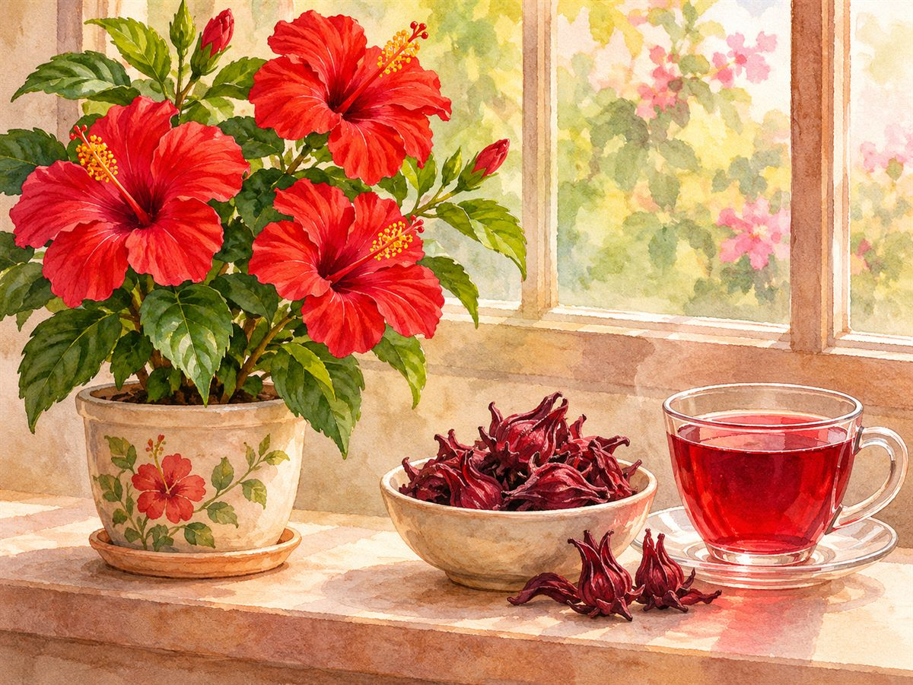
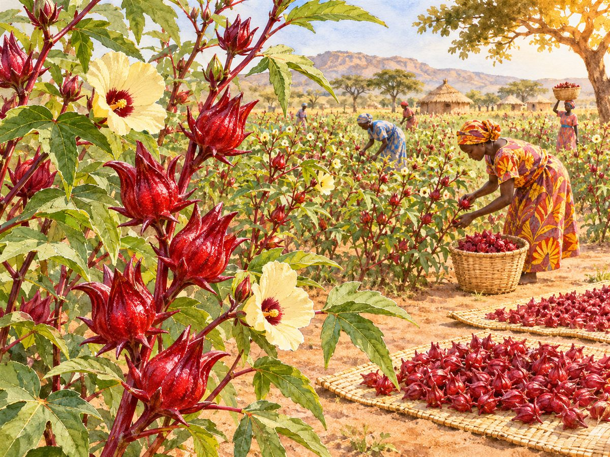
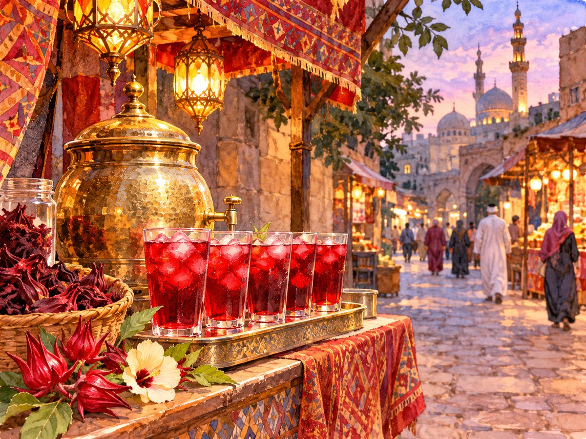
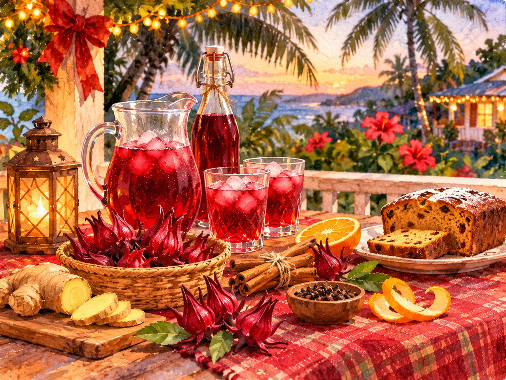
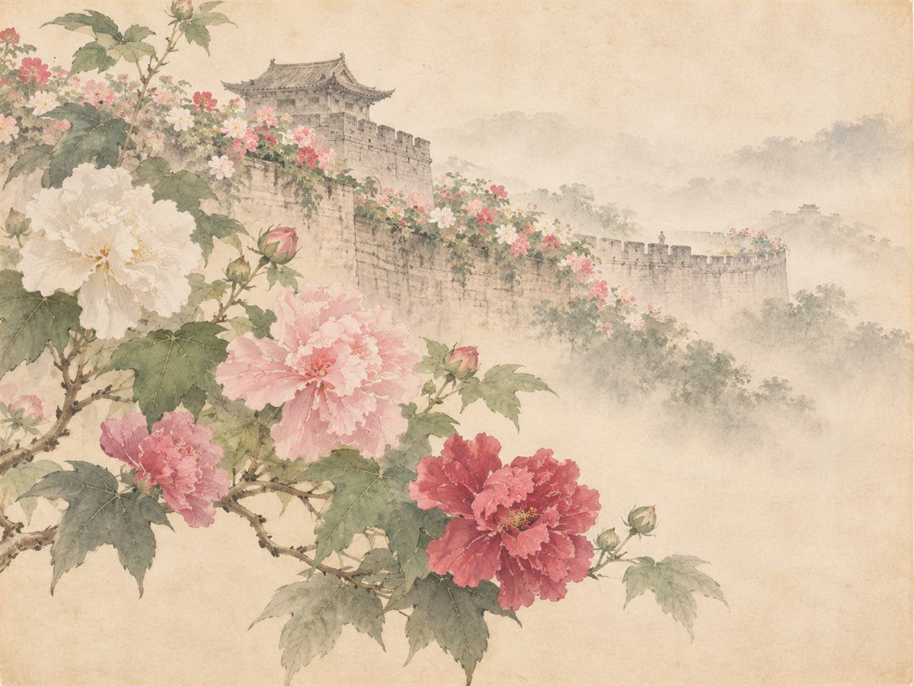

Ibištek sudánsky
Hibiscus sabdariffa · používa sa kalich · v mojej zbierke najmä v ovocných čajoch
Keď ovocný čaj vo vrecúšku sfarbí vodu na krásne rubínovo, takmer vždy je za tým ibištek. V mojej zbierke ho nájdete v mnohých vrecúškach. A predsa je ibištek plný prekvapení – už len preto, že to, čo sa na obaloch volá „kvet ibišteka“, vlastne vôbec nie je kvet.
Nie je to ibištek z kvetináča
Veľa ľudí si pri slove ibištek predstaví izbovú rastlinu s veľkými červenými kvetmi. To je však ibištek čínsky (Hibiscus rosa-sinensis), pôvodom z Ázie. Do čaju sa dáva iný druh – ibištek sudánsky, po česky ibišek súdánský, po anglicky roselle. Sú to príbuzní, ale nie dvojčatá. Obaja patria medzi slezovité, rovnako ako náš sliez.

Kvet, ktorý nie je kvet
Kvet ibišteka sudánskeho nie je červený, ale bledožltý s tmavočerveným stredom. Keď odkvitne, zostane po ňom kalich – zelené lístky, ktoré kvet zospodu držali. Ten sa začne zväčšovať, zhrubne, zdužnatie a sfarbí sa na sýto rubínovo. Vnútri dozrieva tobolka so semenami.
Práve tieto kalichy sa ručne zbierajú, sušia a dávajú do čaju. Keď si teda na obale prečítate „kvet ibišteka“, už viete, že v skutočnosti pijete kalich. Chuť má kyslastú, trochu ako brusnice.

Ibiš, ibištek a jedno grécke slovo
Latinské meno Hibiscus pochádza z gréckeho hibiskos. Grécky lekár Dioskoridés tak v 1. storočí nazýval inú rastlinu – ibiš lekársky (Althaea officinalis). Ibiš a ibištek sa preto ľahko pomýlia, hoci sú to dve rôzne rastliny. Keď sv. Hildegarda z Bingenu v 12. storočí písala o rastline Ybischa, myslela tým ibiš, nie ibištek.
Jedna rastlina, veľa mien
Ibištek sudánsky pochádza asi z Afriky a dnes sa pestuje v teplých krajinách po celom svete. Kam prišiel, tam dostal nové meno:
- karkadé – v Egypte a Sudáne (v Taliansku carcadè),
- bissap – v Senegale a západnej Afrike; v Senegale ho volajú aj národným nápojom,
- agua de jamaica – v Mexiku a Strednej Amerike, doslova „jamajková voda“,
- sorrel – na Jamajke a v ďalších krajinách Karibiku.
Pohár pre mladomanželov
V Egypte sa karkadé tradične podáva na svadbách – pripíja sa ním novomanželom, rubínová farba patrí k radosti. Pije sa horúce aj studené s ľadom a v uliciach ho predávajú pouliční predavači z veľkých nádob. Občas sa mu hovorí „čaj faraónov“, to je však len pekná prezývka, nie doložená história.

Vianoce na Jamajke
Na Jamajke sa z ibišteka na Vianoce pripravuje rubínovočervený nápoj sorrel – so zázvorom, škoricou, klinčekmi a pomarančovou kôrou. Podáva sa vychladený, s ovocným koláčom, a dáva sa aj ako darček. Na Vianoce sa pije aj preto, že čerstvé kalichy dozrievajú práve vtedy – koncom novembra sú nimi trhy plné.
Pozrite sa na vrecúško z mojej zbierky: Zimný punč od Biogeny má v sebe tiež ibištek, škoricu, klinček aj pomaranč. Taká malá Jamajka v šálke.

Listy do hrnca, stonky na povrazy
Ibištek sudánsky nie je len na pitie. V Indii sa jeho kyslasté listy varia ako zelenina pod menom gongura, napríklad so šošovicou. Jedna jeho odroda sa pestuje kvôli vláknu zo stonky: je svetlé, lesklé a pomerne pevné a spolu s jutou sa z neho robia vrecia a motúzy. A nemusí byť ani červený – existujú aj formy so svetlými, zelenkastými kalichmi.
Ibištek aj na Slovensku
Na poliach najmä na juhu Slovenska rastie ako burina ibištek trojdielny (Hibiscus trionum). Má svetlé kvety s tmavým stredom a po anglicky sa volá flower-of-an-hour – „kvet jednej hodiny“. Do čaju sa nedáva, je to iný druh.
Aj tento nenápadný ibištek však ukrýva zaujímavosť. Jeho lupienky sa vo svetle jemne trblietajú dúhovými farbami, ako mydlová bublina – na povrchu majú drobné ryhy, ktoré rozkladajú svetlo. Vedci v roku 2009 v časopise Science opísali, že čmeliaky sa tento lesk naučia rozpoznať a podľa neho nájdu kvet so sladkou odmenou.

Jeden deň, alebo navždy?
Kvet ibišteka sýrskeho vydrží zvyčajne len jeden deň. V Japonsku sa preto hovorí o „sláve ibišteka, ktorá trvá jeden deň“ – keď chcú povedať, že sláva a moc rýchlo pominú. Príslovie pochádza zo starej čínskej básne, ktorú v 9. storočí napísal básnik Po Ťü-i. Voľne preložené: borovica žije tisíc rokov, a predsa raz zhnije; ibištek kvitne jeden deň, a predsa má svoju slávu. Básnik tou krátkou krásou vlastne nepohŕdal – chválil ju.
V Kórei sa na ten istý kvet pozerajú úplne opačne. Volajú ho mugunghwa – „kvet, ktorý nikdy nezvädne“. Jeden kvet síce opadne, ale na jeho miesto hneď rozkvitne ďalší a ker kvitne bez prestávky asi sto dní, od júla do októbra. Preto je pre Kórejcov znakom vytrvalosti a spomínajú ho aj vo svojej štátnej hymne.
Možno sa raz nebude volať ibištek
Botanici dnes skúmajú príbuznosť rastlín aj podľa dedičnej informácie a niekedy zistia, že rastliny s rovnakým menom príbuzné až tak nie sú. V roku 2025 preto navrhli, aby ibištek sudánsky a vyše sto jeho najbližších príbuzných tvorili samostatný rod s menom Sabdariffa. Či sa to ujme, ukáže čas. Ale je možné, že o pár rokov budeme na obaloch čítať úplne nové latinské meno.
A ešte jedna vlastnosť: farbivo z ibišteka mení farbu podľa toho, či je prostredie kyslé, alebo zásadité. Či to dokáže aj obyčajný čaj z vrecúška, si chcem vyskúšať sám – a napíšem, ako to dopadlo.
Zdroje
- Roselle – Wikipedia (anglicky)
- Hibiscus tea – Wikipedia (anglicky)
- Roselle – Encyclopaedia Britannica (anglicky; aj o vlákne)
- Hibiscus sabdariffa – Kráľovská botanická záhrada Kew (anglicky)
- Karkadé v Egypte – Egyptian Streets (anglicky)
- Vianočné zvyky na Jamajke – Jamaica Information Service (anglicky)
- Sorrel, vianočný nápoj Karibiku – NPR (anglicky)
- Ibištek trojdielny – BOTANY.cz
- Dúhové kvety a čmeliaky – Univerzita v Bristole, 2009 (anglicky)
- Národný kvet Malajzie – vláda Malajzie (anglicky)
- Havajský ibištek – Wikipedia (anglicky)
- Erb Antiguy a Barbudy – Wikipedia (anglicky)
- Čcheng-tu, mesto ibišteka – The World of Chinese (anglicky)
- Mugunghwa, národný kvet Kórey – kórejské ministerstvo zahraničných vecí (anglicky)
- Báseň Po Ťü-iho a jej ohlas v Japonsku – Univerzita Seijo (japonsky)
- Rod Sabdariffa – Australian Systematic Botany, 2025 (anglicky)
Text pripravil Claude, spolutvorca stránky.
Táto stránka je o čajoch, ktoré si kúpite v obchode, a o mojej zbierke ich obalov. Nie je návodom na zber rastlín.